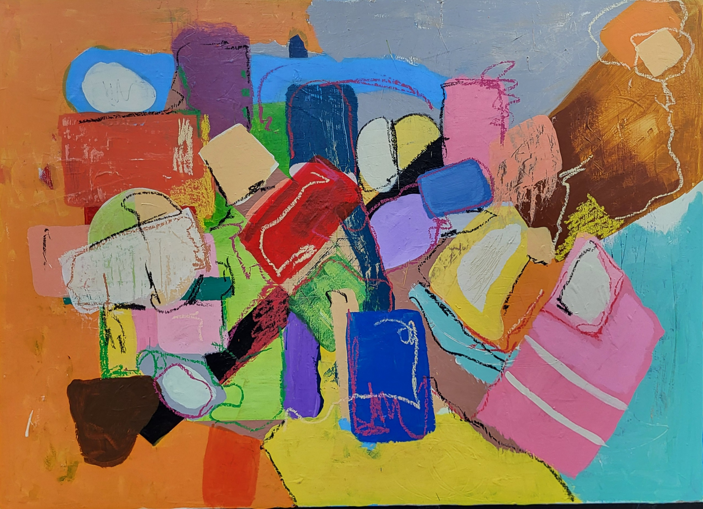

Welcome to the official website of Artist Kenneth J. Lewis Sr—a prolific, self-taught painter whose powerful, intuitive works span multiple styles and mediums.
Contact: (609) 372-6022 · kjlartsanctuary@gmail.com
Kenneth J. Lewis Sr is a self-taught contemporary artist and painter based in Ewing, New Jersey. Explore original paintings, series collections, exhibitions, and Art with Kenneth. For collecting inquiries, call (609) 372-6022 or email kjlartsanctuary@gmail.com.
Who is Kenneth J. Lewis Sr?
Kenneth J. Lewis Sr is a self-taught contemporary artist known for expressive painting across abstract and figurative series.
Where is KJL Art Sanctuary located?
KJL Art Sanctuary Gallery and Studio is located in Ewing, New Jersey.
How can I purchase artwork or inquire?
Call (609) 372-6022 or email kjlartsanctuary@gmail.com for availability, pricing, and collecting options.
What is Art with Kenneth?
Art with Kenneth features studio sessions, live painting, Art History episodes, and behind-the-scenes creative process.
I am honored to be featured in African American Abstractions at Ellarslie Museum alongside James Dupree and Femi Johnson. This exhibition celebrates the richness, energy, and power of abstraction through the work of outstanding area artists.
Visit the official exhibition page to learn more about the show, dates, and museum details.

Join me Easter Saturday, April 4, 2026, at Quaker Bridge Mall (Center Court – 1st Floor) for a special live painting event the day before Easter. I’ll be creating a vibrant 48 x 60 painting live from open to close, and you’ll be able to watch the artwork come to life throughout the day.
This family-friendly event will also include a kids Easter card-making station, where children can create their own handmade Easter cards while experiencing art in action. Bring the family, enjoy the spirit of the Easter season, and spend the day surrounded by creativity and color.
Free & Family Friendly